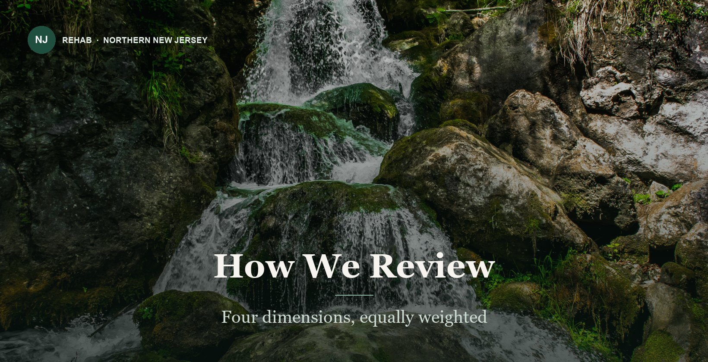

Methodology
How we review
Every center is assessed on the same four dimensions, weighted equally at 25 percent each, using information the center itself publishes.

Clinical clarity
Are the programs, schedules and clinical staffing described specifically enough to know what you are buying?
Medical support
What medical and psychiatric services are named, and are they delivered on site or by referral?
Program depth
How many levels of care are offered, and what therapies and specialty tracks are documented?
Continuing care
What happens after the program ends—step-down, alumni support, family involvement?
What these scores are not
Our scores measure the clarity and breadth of publicly available information—not treatment outcomes or patient satisfaction. They are not patient reviews, clinical outcome ratings or guarantees. A center may deliver excellent care and publish very little about it, and the reverse is also possible. Always confirm current licensing, clinical staff, costs and admission suitability directly with the center.
Why publication quality is worth scoring at all
Because it is the only thing a family can check at 11pm before they call anyone. A center that publishes its license number, its schedule and the levels of care it does not offer has made itself checkable. One that publishes adjectives has not. That is not the same as quality of care, and this guide does not claim it is—but it is a real signal, and it is the signal available to you before admission.
Sources
Each center’s own website, as published in August 2026. Where a center does not publish something—a license number, an accreditation, a payer list—the entry says so rather than filling the gap.